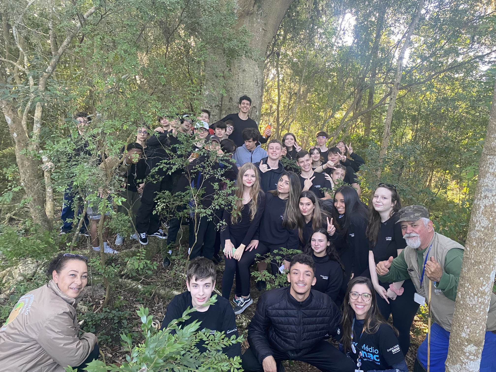
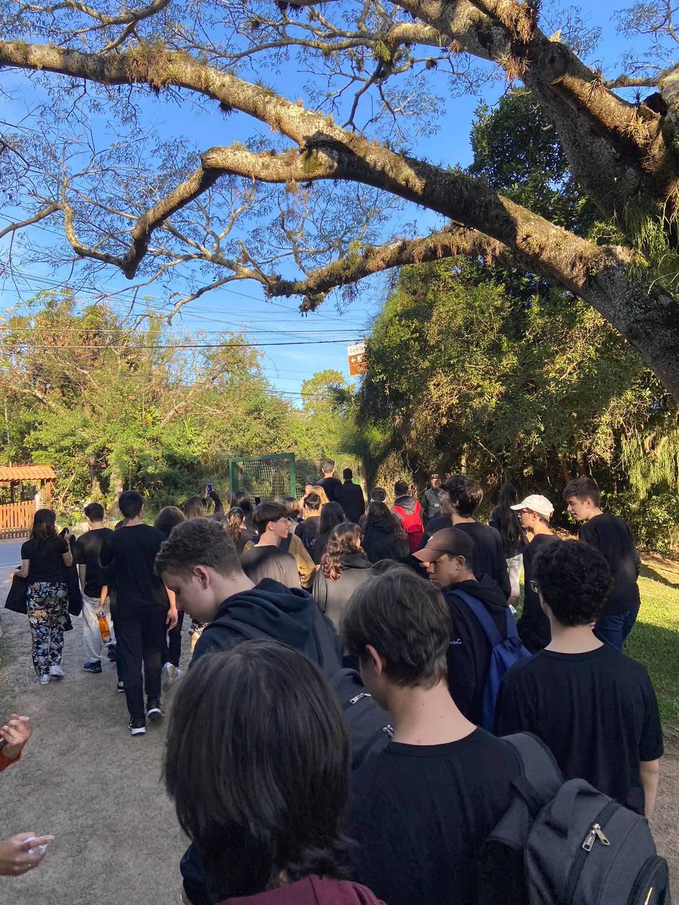

Em junho de 2023, a turma 102 do Senac Distrito Criativo realizou uma saída de campo para a reserva do Lami com o intúito de conhecer o lugar e fazer uma trilha pelo local, além de entender como é feita uma reserva ambiental e quais são seus objetivos.
Com esta experiência, tivemos que fazer um relatório sobre a saída de campo, contando o que aprendemos e o que vimos lá.
Abaixo algumas fotos:
 